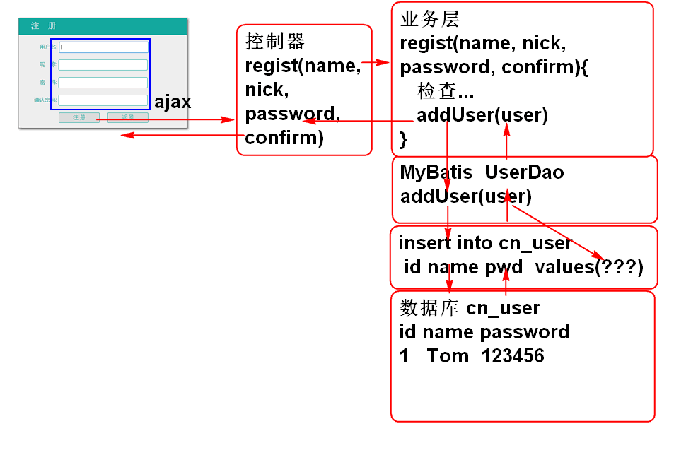
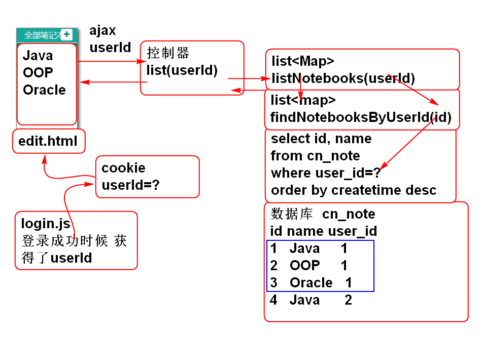
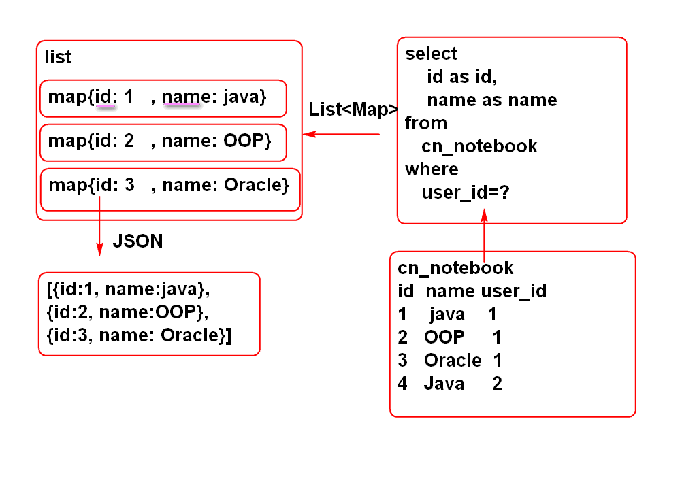

原理:
重构控制器增加异常处理方法 UserController
@ExceptionHandler( UserNotFoundException.class)
@ResponseBody
public JsonResult handleUserNotFound(
UserNotFoundException e){
e.printStackTrace();
return new JsonResult(2,e);
}
@ExceptionHandler(PasswordException.class)
@ResponseBody
public JsonResult handlePassword(
PasswordException e){
e.printStackTrace();
return new JsonResult(3,e);
}
重构JsonResult 添加 构造器
public JsonResult(int state, Throwable e) {
this.state = state;
this.message = e.getMessage();
}
重构 login.js 的loginAction方法, 显示错误信息
var msg = result.message;
if(result.state==2){
$('#count').next().html(msg);
}else if(result.state==3){
$('#password').next().html(msg);
}else{
alert(msg);
}
测试
原理:

声明持久层方法: UserDao
int addUser(User user);
声明SQL UserMappeer.xml
<insert id="addUser"
parameterType="cn.tedu.note.entity.User">
insert into cn_user (
cn_user_id,
cn_user_name,
cn_user_password,
cn_user_token,
cn_user_nick
) values (
#{id},
#{name},
#{password},
#{token},
#{nick}
)
</insert>
测试 UserDaoTest:
UserDao dao;
@Before
public void initDao(){
dao = ctx.getBean(
"userDao", UserDao.class);
}
@Test
public void testAddUser(){
String id=UUID.randomUUID().toString();
String name = "Tom";
String salt = "今天你吃了吗?";
String password =
DigestUtils.md5Hex(salt+"123456");
String token = "";
String nick = "";
User user = new User(
id, name, password, token, nick);
int n = dao.addUser(user);
System.out.println(n);
}
声明业务层方法 UserService
/**
* UserService 中添加注册功能
* @param name
* @param nick
* @param password
* @param confirm
* @return 注册成功的用户信息
* @throws UserNameException 用户名异常
* @throws PasswordException 密码异常
*/
User regist(String name, String nick,
String password, String confirm)
throws UserNameException,
PasswordException;
声明业务层异常 UserNameException
public class UserNameException extends RuntimeException {
private static final long serialVersionUID = 6435296194529486206L;
public UserNameException() {
}
public UserNameException(String message) {
super(message);
}
public UserNameException(Throwable cause) {
super(cause);
}
public UserNameException(String message, Throwable cause) {
super(message, cause);
}
public UserNameException(String message, Throwable cause, boolean enableSuppression, boolean writableStackTrace) {
super(message, cause, enableSuppression, writableStackTrace);
}
}
重构 jdbc.properties 和 UserServiceImpl, 将salt存储到配置文件, 利用Spring注入到属性中:
# jdbc.properties
salt=\u4ECA\u5929\u4F60\u5403\u4E86\u5417?
// UserServiceImpl
@Value("#{jdbc.salt}")
private String salt;
实现业务层方法: UserServiceImpl
public User regist(String name,
String nick, String password,
String confirm)
throws UserNameException, PasswordException {
//检查name, 不能重复
if(name==null || name.trim().isEmpty()){
throw new UserNameException("不能空");
}
User one = userDao.findUserByName(name);
if(one!=null){
throw new UserNameException("已注册");
}
//检查密码
if(password==null || password.trim().isEmpty()){
throw new PasswordException("不能空");
}
if(! password.equals(confirm)){
throw new PasswordException("确认密码不一致");
}
//检查nick
if(nick ==null || nick.trim().isEmpty()){
nick = name;
}
String id = UUID.randomUUID().toString();
String token = "";
password = DigestUtils.md5Hex(salt+password);
User user = new User(
id, name, password,
token, nick);
int n = userDao.addUser(user);
if(n!=1){
throw new RuntimeException("添加失败!");
}
return user;
}
测试:UserServiceTest
UserService service;
@Before
public void initService(){
service = ctx.getBean("userService",
UserService.class);
}
@Test
public void testRegist(){
User user = service.regist(
"Andy", "Andy", "123456",
"123456");
System.out.println(user);
}
添加控制器方法 UserController
@RequestMapping("/regist.do")
@ResponseBody
public JsonResult regist(String name,
String nick, String password,
String confirm){
User user = userService.regist(
name, nick, password, confirm);
return new JsonResult(user);
}
测试
http://localhost:8080/note/user/regist.do?name=Jerry&nick=AN&password=12345&confirm=12345
更新 log_in.html 取消页面检查js脚本:
window.onload=function(){
var t =setTimeout("get('zc').style.visibility='visible'",800);
//get('final_password').onblur=function(){
// var npassword=get('regist_password').value;
// var fpassword=get('final_password').value;
// if(npassword!=fpassword){
// get('warning_3').style.display='block';
// }
//}
//get('regist_password').onblur=function(){
// var npassword=get('regist_password').value.length;
// if(npassword<6&&npassword>0){
// get('warning_2').style.display='block';
// }
//}
//get('regist_password').onfocus=function(){
// get('warning_2').style.display='none';
//}
//get('final_password').onfocus=function(){
// get('warning_3').style.display='none';
//}
}
添加注册对话框事件脚本 login.js
$('#regist_button').click(registAction);
$('#regist_username').blur(checkRegistName);
$('#regist_password').blur(checkRegistPassword);
$('#final_password').blur(checkConfirm);
添加注册对话框数据检验方法:login.js
function checkConfirm(){
var pwd2 = $('#final_password').val();
var pwd = $('#regist_password').val();
//pwd 如果是空值表示 false, 非空则是true
if(pwd && pwd==pwd2){
$('#final_password').next().hide();
return true;
}
$('#final_password').next().show()
.find('span').html('确认密码不一致');
return false;
}
function checkRegistPassword(){
var pwd = $('#regist_password').val().trim();
var rule = /^\w{4,10}$/;
if(rule.test(pwd)){
$('#regist_password').next().hide();
return true;
}
$('#regist_password').next().show()
.find('span').html('4~10个字符');
return false;
}
function checkRegistName(){
var name = $('#regist_username').val().trim();
var rule = /^\w{4,10}$/;
if(rule.test(name)){
$('#regist_username').next().hide();
return true;
}
$('#regist_username').next().show()
.find('span').html('4~10字符');
return false;
}
添加注册对话框注册按钮事件方法 login.js
function registAction(){
console.log('registAction');
//检验界面参数
var n = checkRegistName() +
checkRegistPassword() +
checkConfirm();
if(n!=3){
return ;
}
//获取界面中表单数据
var name = $('#regist_username').val().trim();
var nick = $('#nickname').val();
var password = $('#regist_password').val();
var confirm = $('#final_password').val();
//发起AJAX请求
var url = 'user/regist.do';
var data = {name:name,
nick:nick,
password:password,
confirm:confirm};
//console.log(data);
// $.post 是 $.ajax的简化版
$.post(url, data, function(result){
console.log(result);
if(result.state==0){
//退回登录界面
$('#back').click();
var name = result.data.name;
$('#count').val(name);
$('#password').focus();
//清空表单
$('#regist_username').val('');
$('#nickname').val('');
$('#regist_password').val('');
$('#final_password').val('');
}else if(result.state==4){
$('#regist_username').next().show()
.find('span').html(result.message);
}else if(result.state==3){
$('#regist_password').next().show()
.find('span').html(result.message);
}else{
alert(result.message);
}
});
//得到响应以后, 更新界面
}
重构控制器UserController 增加事件处理方法:
@ExceptionHandler(UserNameException.class)
@ResponseBody
public JsonResult handleUserName(
UserNameException e){
e.printStackTrace();
return new JsonResult(4,e);
}
测试...
调试工具:

原理:

添加持久层接口 NotebookDao:
public interface NotebookDao {
List<Map<String, Object>>
findNotebooksByUserId(
String userId);
}
添加Mapper文件: NotebookMapper.xml
<mapper namespace="cn.tedu.note.dao.NotebookDao">
<select id="findNotebooksByUserId"
parameterType="string"
resultType="map">
select
cn_notebook_id as id,
cn_notebook_name as name
from
cn_notebook
where
cn_user_id = #{userId}
order by
cn_notebook_createtime desc
</select>
</mapper>
测试:
public class NotebookDaoTest extends BaseTest{
NotebookDao dao;
@Before
public void initDao(){
dao = ctx.getBean("notebookDao",
NotebookDao.class);
}
@Test
//select cn_user_id from cn_notebook;
public void testFindNotebooksByUserId(){
String userId="52f9b276-38ee-447f-a3aa-0d54e7a736e4";
List<Map<String, Object>> list=
dao.findNotebooksByUserId(userId);
for (Map<String, Object> map : list) {
System.out.println(map);
}
}
}
提示: 需要先到数据库中获得拥有笔记的用户ID userId
select cn_user_id from cn_notebook;
List

声明业务接口NotebookService
public interface NotebookService {
List<Map<String, Object>>
listNotebooks(String userId)
throws UserNotFoundException;
}
实现业务接口 NotebookServiceImpl
@Service("notebookService")
public class NotebookServiceImpl implements NotebookService {
@Resource
private NotebookDao notebookDao;
@Resource
private UserDao userDao;
public List<Map<String, Object>>
listNotebooks(String userId)
throws UserNotFoundException {
if(userId==null || userId.trim().isEmpty()){
throw new UserNotFoundException("ID不能空");
}
User user = userDao.findUserById(userId);
if(user==null){
throw new UserNotFoundException("用户不存在");
}
return notebookDao
.findNotebooksByUserId(userId);
}
}
添加查询方法 UserDao
User findUserById(String userId);
添加SQL UserMapper
<select id="findUserById"
parameterType="string"
resultType="cn.tedu.note.entity.User">
select
cn_user_id as id,
cn_user_name as name,
cn_user_password as password,
cn_user_token as token,
cn_user_nick as nick
from
cn_user
where
cn_user_id = #{userId}
</select>
测试:
public class NotebookServiceTest extends BaseTest {
NotebookService service;
@Before
public void initService(){
service = ctx.getBean("notebookService",
NotebookService.class);
}
@Test
public void testListNotebooks(){
String userId="52f9b276-38ee-447f-a3aa-0d54e7a736e4";
List<Map<String, Object>> list=
service.listNotebooks(userId);
for (Map<String, Object> map : list) {
System.out.println(map);
}
}
}